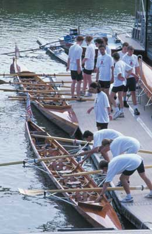

| Der "Schnupperkurs" für Erwachsene |
| Sind Sie sportlich interessiert? Möchten Sie den Rudersport kennenlernen oder
Ihre in Schüler- und Studentenzeiten erworbenen Kenntnisse auffrischen? Unsere
"Schnupperkurse" bieten Ihnen hierzu die Gelegenheit. Auch 2011 bieten wir wieder Schnupperkurse an. Der Kurs besteht für Anfänger aus sechs Übungseinheiten von etwa 90 min. Dauer und sollte innerhalb von zwei Monaten abgeschlossen sein. Die Kursgebühr beträgt 50,- Euro. Anschließend können Sie entscheiden, ob Sie Mitglied unseres Vereins werden möchten. Interessenten, die das Rudern noch nicht beherrschen, lernen zusammen mit anderen "Anfängern" unter der Leitung erfahrener Übungsleiter die Grundkenntnisse des Rudersports in unserem modernen Ruderbecken und im ruhigen "Hülstrung-Hafen" kennen und unternehmen auch schon kleinere Ausfahrten auf dem Rhein. Nachdem Sie Mitglied des WSVD geworden sind, bilden wir Sie weiter aus. Sie vertiefen Ihre Rudertechnik und üben das Rudern auf dem Rhein. Wiedereinsteiger können Ihre Vorkenntnisse zusammen mit den Anfängern auffrischen und lernen so das Rudern auf dem Rhein und den Sport in unserem Verein kennen. Unsere Schnupperkurse finden parallel zum normalen Ruderbetrieb statt, so dass Sie schon während des Kurses den Verein und auch andere Ruderer/innen kennen lernen. Ebenso lernen Sie während der Ausbildung unseren Fitness- und Kraftraum kennen. Damen- und Herren- Umkleiden und -Duschen stehen Ihnen zur Verfügung. Sprechen Sie sportliche Freunde/Freundinnen im Kollegen- oder Bekanntenkreis an und kommen Sie als Gruppe zu uns. Dann macht der Sport noch mehr Freude. Unser Bootshaus liegt auf der rechten Rheinseite an der Rotterdamer Str. 40, 400 m unterhalb der Theodor-Heuss-Brücke. Schauen Sie einmal vorbei. Wenn sie sofort anfangen möchten, kommen Sie zu den im Übungsplan angegebenen Zeiten, bringen sie Sportzeug und die Kursgebühr mit und sprechen Sie einfach einen der Übungsleiter an. Gute Schwimmkenntnisse werden vorausgesetzt. Alle Kursteilnehmer sind über die Sporthilfe unfallversichert. Wenn Sie mehr erfahren wollen, finden Sie Ansprechpartner unter Kontakt oder rufen Sie unser Clubsekretariat an. |
|
Der erste Schnupperkurs für Erwachsene
beginnt Dienstag, den 17. April um 18.00 Uhr. Für 50,- € bekommen Sie sechs Übungseinheiten von unseren qualifizierten Übungsleitern. Die Boote stellt der Verein zur Verfügung, Sie müssen nur schwimmen können. Sie lernen das Rudern gemeinsam in bequemen Mannschaftsbooten auf ruhigem Wasser. Bis Mitte Juni haben Sie dann Zeit, die Grundzüge des Ruderns, unseren Verein und das Rudern auf dem Rhein kennen zu lernen. Nach Abschluss des Schnupperkurses bilden wir Sie als Mitglied natürlich weiter aus. Treffpunkt ist die Bootshalle des WSVD unterhalb der Terrasse vom „Haus am Rhein“, Rotterdamer Str. 40. Bitte bringen Sie neben der Kursgebühr bereits zur ersten Stunde Sportbekleidung und Turnschuhe mit, an den folgenden Terminen auch wetterfeste Sportbekleidung. Dieser Schnupperkurs wird am 17. Juni mit einer Abschlussfahrt enden. Der nächste Schnupperkurs wird im Juni beginnen und wahrscheinlich als Wochenendkurs angeboten werden.
|
| Der "Schnupperkurs" für Schüler und Schülerinnen |
| Unter der Leitung unseres erfahrenen Trainers
Alwill Brouwers könnt ihr das Rudern erlernen. Die Grundkenntnisse
erhaltet ihr in unserem Ruderhaus und im "Hülstrung-Hafen" an der Rotterdamer
Straße, die anschließende Ausbildung zum/zur Rennruderer/in erfolgt in unserem
Trainingszentrum im Industriehafen. Für den Schnupperkurs zahlt ihr eine Kursgebühr von € 25,-. Diese Gebühr wird im Falle einer Mitgliedschaft auf die Aufnahmegebühr angerechnet. Gute Schwimmkenntnisse werden vorausgesetzt. Alle Kursteilnehmer sind über die Sporthilfe unfallversichert. Unser Bootshaus liegt auf der rechten Rheinseite an der Rotterdamer Str. 40, 400 m unterhalb der Theodor-Heuss-Brücke. Schaut mal vorbei. Wenn ihr mehr erfahren wollt, dann ruft unser Clubsekretariat an. |